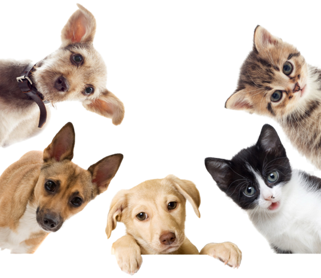
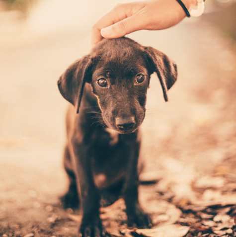
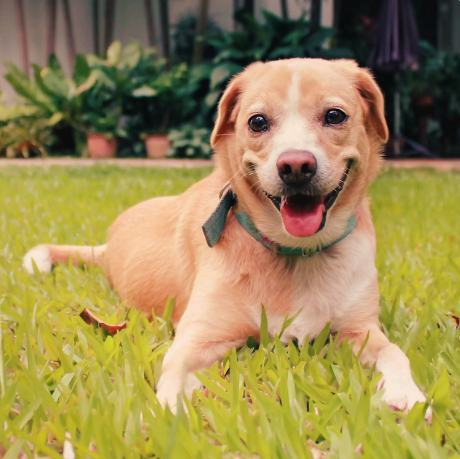
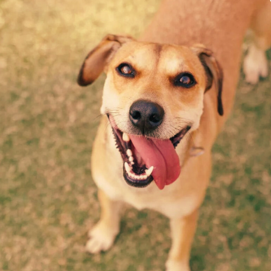

O amor verdadeiro tem quatro patas, um focinho e um rabo
Tá esperando o que pra adotar um aumigo?

Tá esperando o que pra adotar um aumigo?
Infelizmente, muitos animais sofrem maus tratos, e muitas vezes as ONGs e instituições responsáveis por cuidar e resgatar não possuem a visibilidade necessária, ou as pessoas não tem fácil acesso a essas organizações.
Somos a solução para tornar mais fácil o contato direto entre as pessoas interessadas em adoção responsável e as ONGs.
Pessoas que procuram um animal de estimação e priorizam a adoção responsável como uma alternativa ética e sustentável em relação à compra em lojas de animais ou de criadores.
ONG PARCEIRA 1

ONG PARCEIRA 2
ONG PARCEIRA 3